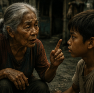

Storybook ni Efren Abueg
Maligayang pagdating, !
Piliin ang kabanata na nais mong basahin.
Ang mga daing ay walang halaga, waring mga patak ng ulan sa malalaking bitak ng lupa. Ang mga tao'y bantad na sa pagpapalimos ng maraming pulubi. Ang mga tao'y naghihikahos na rin. Ang panahon ay patuloy na ibinuburol ang karukhaan.
Tumugtog ang kampana ng simbahan. Pagkaraan ng ilang sandali, narinig ni Adong ang pagkilos ng mga tao palabas ng simbahan. Waring nagmamadali ang mga ito, tila ba sa wala pang isang oras na pagkakatigil sa loob ng simbahan ay napapaso at nakararamdam ng hapdi hindi sa katawan, kundi sa kaluluwa.
Natuwa si Adong. Pinagbuti niya ang paglalahad ng kanyang palad at pagtawag sa mga taong papalapit sa kanyang kinaroroonan.

“Malapit nang dumating si Bruno...” ani Aling Ebeng na tila walang partikular na pinatutungkulan, kundi para sa lahat ng maaaring makarinig.
Biglang napawi ang katuwaan ni Adong. Nararamdaman niyang muling bumalik ang gutom at pangamba na matagal nang bumabalot sa kanyang buhay. Ang takot na sumisigid sa kanyang katawan at nagpapakilabot sa kanya ay tila itinaboy ng isang mahiwagang kamay, ngunit hindi tuluyang nawala.
Habang dumaraan sa kanyang harapan ang mga tao—malalamig ang mukha, walang awa at walang pakialam—nakadarama siya ng matinding sakit at galit. Ilang araw na niyang nararanasan ang ganitong kalagayan, at ang nararamdaman niyang paghihirap ay tila nagtutulak sa kanya na gumawa ng isang marahas na bagay.
Isang singkong barya ang nalaglag sa kanyang palad. Hindi ito inilagay nang maayos ng mga nagbibigay, kundi basta lamang inihulog dahil ayaw nilang madikit ang kanilang mga kamay sa maruruming palad ni Adong.
Agad niyang inilagay ang mga barya sa kanyang bulsa. Lumikha ito ng bahagyang tunog nang tumama sa iba pang sentimo na naroon.
Sa kanyang pagiging abala, hindi niya napansing kakaunti na lamang ang mga taong lumalabas mula sa simbahan. Muli niyang nakita ang mga malamig na mukha, ang pag-iling ng mga kamay na nagpapakita ng pagwawalang-bahala, at ang mga hakbang ng mga taong pilit siyang iniiwasan.
“Adong, ayun na si Bruno,” narinig niyang sabi ni Aling Ebeng.
Tinanaw ni Adong ang itinuro ng matanda. Si Bruno nga iyon—malapad ang katawan, namumutok ang mga bisig, at maliit ang ulong natatakpan ng suot na gora.
Napadukot si Adong sa kanyang bulsa. Dinama niya ang mga barya. Malamig ang mga ito, ngunit hindi sapat ang lamig nito upang mapawi ang apoy ng galit at takot na matagal nang namumuo sa kanyang dibdib.
Mahigpit niyang kinulong sa kanyang palad ang mga barya.
“Diyan na kayo, Aling Ebeng… sabihin ninyo kay Bruno na wala ako,” mabilis niyang sinabi.
“Ano? Naloloko ka ba, Adong? Sasaktan ka ni Bruno kapag nakita ka niya!” babala ng matanda.
Narinig man ni Adong ang sinabi ni Aling Ebeng, nagpatuloy pa rin siya sa paglalakad. Sa una ay marahan lamang, ngunit nang makubli siya sa kabilang bahagi ng bakod ng simbahan ay bigla siyang kumaripas ng takbo.
Lumusot siya sa pagitan ng mababagal na dyipni at sumiksik sa mga taong nagsasalubong sa daan. Akala niya ay tuluyan na siyang nakatakas nang makarating siya sa isang maliit na iskinita.
Sumandal siya sa poste ng ilaw at dinama ang tigas nito sa kanyang likuran. Sa murang isip ni Adong ay naramdaman niya ang isang munting tagumpay—ang tagumpay ng isang batang naghimagsik laban sa gutom, takot, at kalupitang matagal na niyang kinamumuhian.
Ngunit ang sandaling iyon ng kalayaan ay agad napawi.
“Adong!” Sinundan iyon ng papalapit na mga yabag. Napahindik si Adong nang marinig ang basag na tinig. Nais niyang tumakbo muli, nais niyang ipagpatuloy ang kanyang pagtakas.
Ngunit hindi na siya nakagalaw.
Ang mga kamay ni Bruno ay parang bakal na humawak sa kanyang bisig. Niluray nito ang maliit na lakas na nagkaroon siya ng tapang upang lumaban sa gutom, pangamba, at paghihirap.
“Bitawan mo ako, Bruno! Bitawan mo ako!” sigaw ni Adong.
Ngunit hindi na niya muling narinig ang kanyang sariling tinig. Tanging ang sakit at kabangisang dulot ng malulupit na kamay ni Bruno ang kanyang naramdaman.
Natutulog ang kanyang mga pandama. Nahilo siya. At pagkaraan ng ilang sandali, hindi na niya naramdaman ang sakit at takot.
Tanging ang katahimikan na tila biglang kumandong sa kanya ang kanyang nadama.
Mabangis na Lungsod
ni Efren Abueg (Abueg, 2009)
BERNAL, ANGEL M. RIVAS, JOHN WANE SANGLAY, ELONA M.